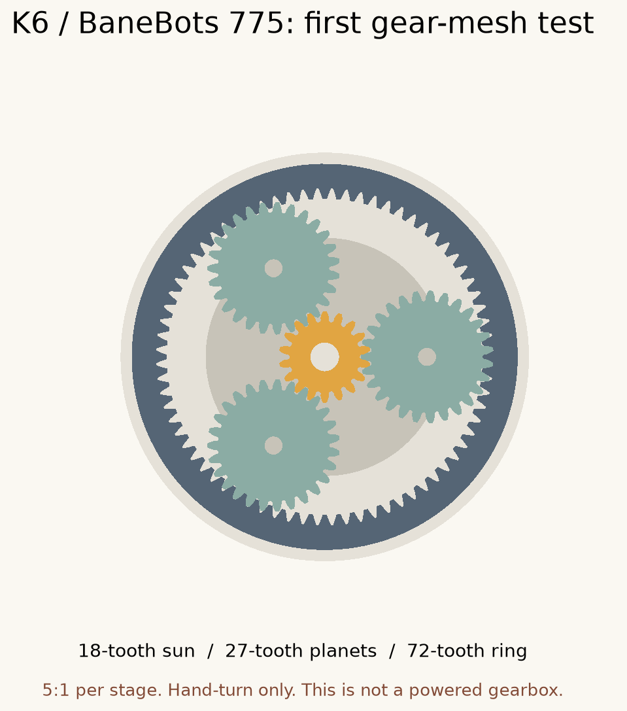

Motor selected: BaneBots M7-RS775-18. This package contains dimensional gauges and a small planetary gear set to turn by hand. It is the first physical prototype, not a complete motorized gearbox.

Open one or more of these files in Bambu Studio or PrusaSlicer. Set units to millimeters and scale to 100%. Lay their flat faces on the plate. PLA is fine for these unpowered fit checks; repeat critical clearances in the final material before making operating parts.
Try the loosest one first. Report which slides on without force and which has obvious wobble. Do not hammer a gauge onto the shaft. These establish the printer/material's hole fit; they do not transmit motor torque.
Print the motor-face template and hold it against the front of the disconnected motor. The slots cover a range around an assumed 29 mm hole-center spacing. The large center opening is clearance, not a precision locating feature. Do not use this as an operating mount or put unknown-length screws into the motor.
Record the actual hole-center spacing, raised collar diameter and height, shaft protrusion from the flat face and from the collar, and whether the shaft has a flat or a smooth round surface. The manufacturer publishes a 0.197 in (about 5 mm) shaft, 0.3 in (7.62 mm) shaft length, and two M4 mounting screws, but does not specify all locating dimensions on its current page.
| Part | Quantity |
|---|---|
| Sun gear, 18 teeth | 1 |
| Planet gear, 27 teeth | 3 |
| Ring gear, 72 teeth | 1 |
| Carrier with printed test pins | 1 |
| Hand-test stand | 1 |
Starting slicer settings for these coupons: 0.4 mm nozzle, 0.16 mm layers, four walls, solid thin gears, and the material manufacturer's filament profile. Check the tooth preview. The pieces print flat without supports. Do not scale individual gears to fix fit.
The separate bearing-seat gauges are for trying an 11 mm outside-diameter bearing, if available. The final bearing arrangement is not selected. The hand-turn fixture uses printed pins and requires no bearings.
One stage is 1 + 72/18 = 5:1. Three stages would give 5 × 5 × 5 = 125:1. Scaling the manufacturer's 19,500 RPM at 18 V to 12 V estimates 13,000 RPM before load, or roughly 104 RPM after that reduction. These are preliminary speed estimates, not a performance guarantee. The delivered files contain one thin test stage, not a completed three-stage gearbox.
The earlier 3-5 Nm output discussion was a design assumption. Measure the K6's actual grinding force with a spring/luggage scale pulled tangentially at a known handle radius. Torque in Nm is scale reading in kgf × 9.81 × radius in meters. Use the intended beans and espresso setting. Keep startup peaks separate from running load. A static reading is only a first sizing input, not a complete dynamic test.
The 775's high input speed and stall current make the first stage, pinion retention and electrical current limiting important. We have not established safe speed, torque, lubrication, fatigue life or temperature for a printed operating gearbox.
parameters.json holds the adjustable dimensions. build.py generates the CAD and verifies the exported meshes. Assembly STEP is a reference assembly, not a print-in-place model. Print the separate STL parts.
This is an independent CAD prototype using cq_gears, an open-source involute gear generator. Omar Salem's MIT-licensed gearbox informed the reference search; its Fusion files were not modified or copied into this design. It is not evidence of this design's load rating.
Motor data: BaneBots manufacturer page. The hand-grinder proof of concept uses a different motor: VykkuF's K6 build.
Prepared by Codex, October 21, 2026. Nothing has been sent to a printer. No physical fit or powered durability has been tested.